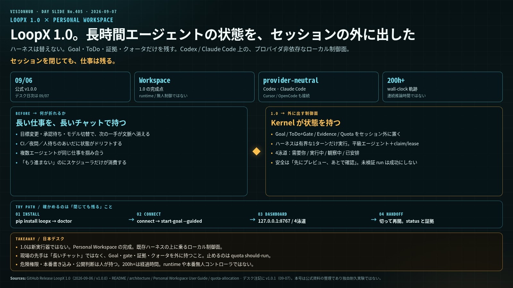

8月の公開耐久
単体エージェントが、状態ドリフトせずに日をまたげるか。
LOOPX 1.0 × PERSONAL WORKSPACE
黄瑞騰（huangruiteng）の開源プロジェクト LoopX が、2026年9月6日に v1.0.0 を出した。1.0の意味は新モデルではない。Personal Workspace の完成である。Codex / Claude Code / Cursor の上に乗る、プロバイダ非依存のローカル制御面。日本デスクの日次は 2026-09-07。公式の日は 09-06 である。

1枚ボード・クリックで拡大壊れている仮定はこれだ。「長い仕事は、長いチャットで持つ」
消える
目標変更、承認待ち、モデル切替、窓を閉じた瞬間に、次に何をすべきかが文脈へ戻る。
外に置く
Goal / ToDo / 証拠 / クォータを Kernel が持つ。ハーネスは有界な1ターンだけを実行する。
4泳道
需要你 / 実行中 / 観察中 / 已安排。確認待ちだけ人に戻し、あとは quota should-run で止める。
上の図が1枚ボード。200+時間は公式 README の wall-clock。1.0は Workspace 完成であり、runtime や本番の無人コントローラではない。
WHAT LANDED
一次｜GitHub Release v1.0.0 2026-09-06 ／ tag v1.0.0 ／ commit 14c5f87
一次は GitHub 公式リリース「LoopX 1.0 — a workspace for long-running agents」。リポジトリは Apache-2.0。言語は Python 中心に TypeScript を添える。作者は黄瑞騰。ByteDance AML、OpenViking 貢献者。
公式の自己規定は短い。
置かないもの：連続推論200時間、無人の本番自治、ブラウザを権威ある事実源とすること、「全テナントの権限が昇格した」という読み。
WHY NOW
一次｜README「Why LoopX」／作者Xの 220.7h / 272.9h 軌跡（wall-clock）
1セッションなら、今のハーネスは仕事を終えられる。壊れるのは仕事がセッションより長くなったときだ。
公式が示す公開軌跡は、OpenViking の issue 修正列と、所有者実行の AutoML showcase。いずれも wall-clock 200時間超（作者発表では 220.7時間と 272.9時間）。待機、人間判断、writeback、再開を含む経過時間である。連続推論時間ではない。
単体エージェントが、状態ドリフトせずに日をまたげるか。
散らばった複数ハーネスの仕事を、一つのワークスペースで見える化し、止めて、再開できるか。
出典：README Why LoopX / Evidence ／ 作者X：220.7 / 272.9 hour trajectories
CONTROL PLANE
一次｜docs/architecture.md ／ README.zh-CN の5問
実行パスは Agent → Capability → Provider。制御結果は Provider readback → Capability transition → Kernel。観測は遷移ではない。レシートも、Capability が検証し Kernel がコミットするまで「進んだ」ことにはならない。
登録エージェントは互いに平級。リーダーエージェントは不要。次の実行者は claim / lease / 能力ゲートで決まる。複数エージェントが同じ Goal を分担できるが、それは同じチャットルームで雑談する方式ではない。
FOUR PILLARS
一次｜quota-allocation.md ／ architecture の Goal・Todo・Lease・Gate
| 柱 | 持つもの | 持たないもの |
|---|---|---|
| Goal | 寿命のある意図。goal_id を境界にレジストリ・状態・履歴を持つ | 無限の自律権。実行できるのは次の有界遷移だけ |
| ToDo / Gate | 身元、所有者、claim、lease。人の判断点を一等オブジェクト化 | チャットの一文に埋もれた「待って」 |
| Evidence | 実行履歴、検証、blocker、受理済み writeback | 未検証 run を成功と呼ぶこと |
| Quota | should-run。duty cycle。検証後にだけ消費 | 空回りの監視ポーリングへの課金 |
クォータは許可ではない。自動計算の配分である。compute=1.0 で全日稼働相当、0.5 で半分、0 で Goal 単位の硬停止。判定順は健全性 → オペレータゲート → 証拠待ち → フォーカス待ち → 計算クォータ。
Handoff が1.0の見えにくい価値である。セッションを閉じる、モデルを替える、Codex から Claude Code へ渡す。Goal 状態と証拠は残る。stop は自動ターンを止め、resume するまで戻さない。quota を 0 にした停止とは、復帰の鍵が違う。
出典：docs/quota-allocation.md ／ Personal Workspace User Guide
PERSONAL WORKSPACE
一次｜Personal Workspace User Guide ／ loopx dashboard → 127.0.0.1:8767/chat/
正式な起動は loopx dashboard。既定 URL は http://127.0.0.1:8767/chat/。ブラウザ / PWA とデスクトップ殻は、同じ loopback サービスと Goal 状態を共有する。手元の全エージェントを勝手に吸い上げない。登録した Goal と Agent だけが見える。
安全モデルは「先にプレビュー、あとで確認」。状態を書く操作は Typed Action のプレビューになり、確認後に receipt が残る。Capability 設定は機械の既定値と Goal 上書きを区別する。
IM / DESKTOP
一次｜v1.0.0 Highlights ／ Desktop Control Plane README
IM は既存の Lark Goal Topic を再接続する。3つの入り方がある。
キャプチャ範囲を広げても、エージェント権限は広がらない。返信先も元 Topic に閉じる。IM は便利な操作面であって、権限のバイパスではない。
macOS（Apple Silicon）は App と runtime をペアで更新する。stable / main、repair、rollback。署名は ad-hoc で、公証（notarize）はされていない。Windows プレビューは手動更新。古いデスクトップ殻は一度手動で入れ替える。ロールバックはインストールを戻すものであり、任意の状態スキーマ移行を戻すものではない。
Windows 11 で使うなら、本線は loopx dashboard（ブラウザ / PWA）。署名付き自動更新を期待しない。
出典：v1.0.0 Highlights ／ README.zh-CN「Windows 预览版目前手动更新」
HARNESS
一次｜Getting Started ／ claude_goal_mode README
要件は Python 3.11+。ダッシュボードを使うなら Node 22.6+。Windows は py -3.11 -m pip install --upgrade loopx。.loopx/、.codex/goals/、.local/ は gitignore する。
loopx start-goal --guided --project . --host-surface codex-cli-tui
TUI では $loopx <タスク>、または skills。既存セッションに Goal を載せる。
/loopx <タスク> はセットアップだけ。実行はネイティブ /loop。
/goal は使わない。トランスクリプト完了判定が should_run と衝突する。アダプタは opt-in。
TRY IT + LIMITS
運用提案｜本号の実験パス。公式が自ら置く限界を先に読む
python3 -m pip install --upgrade loopx → loopx workflow-skills --install → loopx doctorloopx connect のあと loopx start-goal --guidedloopx dashboard。4泳道に Goal が見えるか$loopx または bootstrap messageloopx status と証拠が残るか。quota should-run を見る公式が置く限界。 1.0は Workspace の完成であり staged 権限の全面昇格ではない。200時間超は経過時間。資格情報を自動取得しない。危険な権限・本番書き込み・公開判断は人が持つ。未検証 run を成功証拠にしない。App rollback はインストールを戻す。
本号のデスク日は 2026-09-07。公式 1.0.0 は 09-06。同日に v1.0.1（Goal Channel の安定化）が出ており、本号時点の最新パッチはこちら。v1.0.2（Todo 単一オーナー、表示自動回復、大規模 Workspace 高速化）は 09-09 着地のため、本号の主数字にはしていない。新規導入するなら、発行後の最新パッチを loopx update check で確認する。
出典：Getting Started ／ v1.0.0 Breaking changes: No ／ README Current Status
TAKEAWAY
ハーネスは替えない。
替えるのは、状態の置き場である。
LoopX 1.0は、長時間仕事の制御状態をセッションの外に出した。
進めてよいときだけ進み、判断は人に残す。200時間は壁時計であり、無人の本番自治ではない。